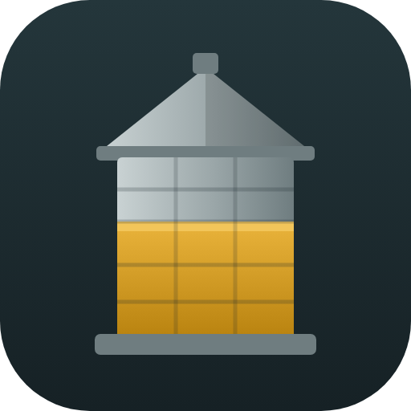

Reporte de silos
Gravetal Bolivia · Reporte de almacenamiento
Listo. Ya tienes el icono del silo; ábrelo desde tu pantalla de inicio o escritorio.
En iPhone o iPad:
- Toca Compartir .
- Elige Agregar a inicio → Agregar.
Para crear el icono:
Abrir el reporte
- Abre esta página en Chrome o Edge.
- Menú ⋮ → Instalar o Añadir a pantalla de inicio.